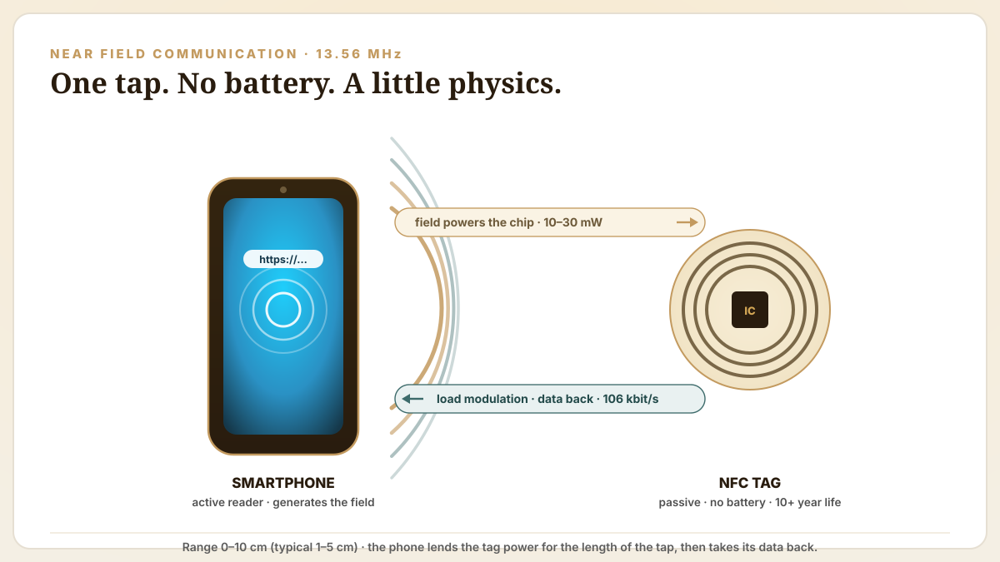
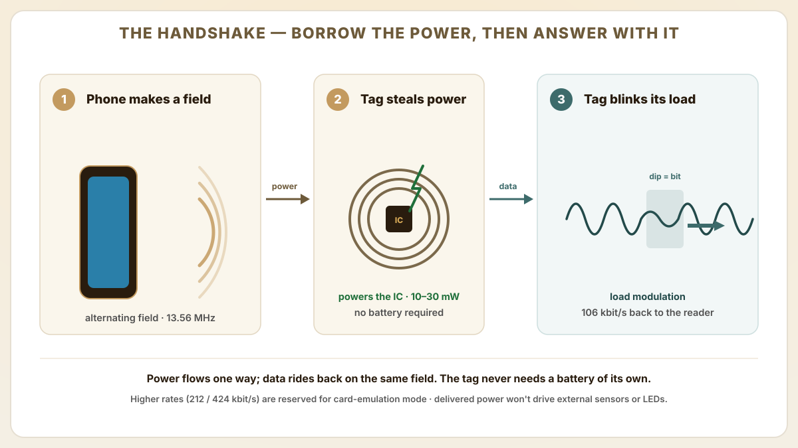
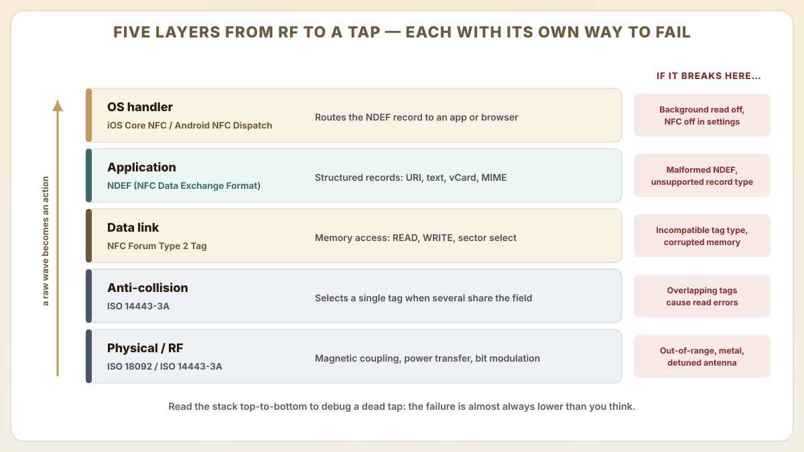
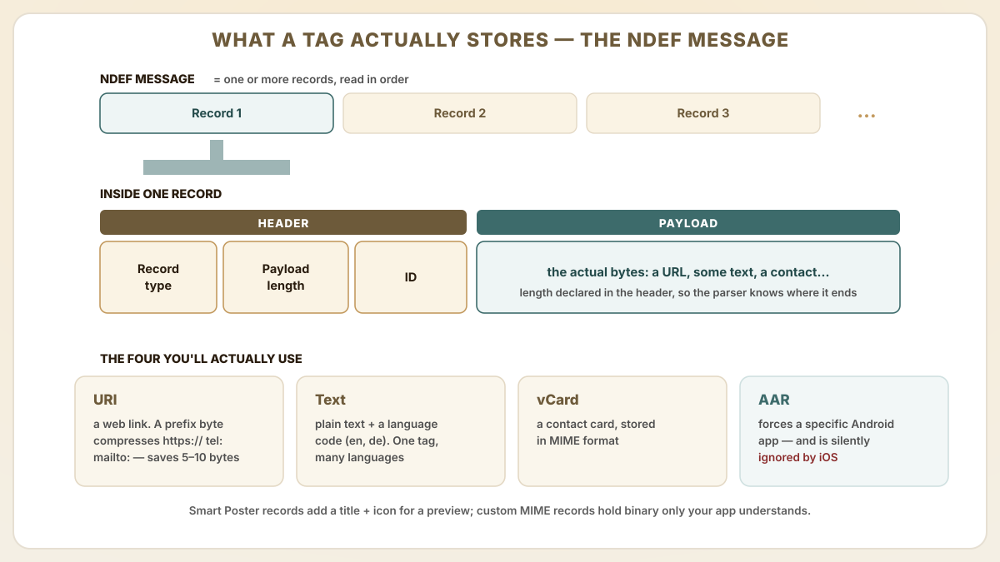
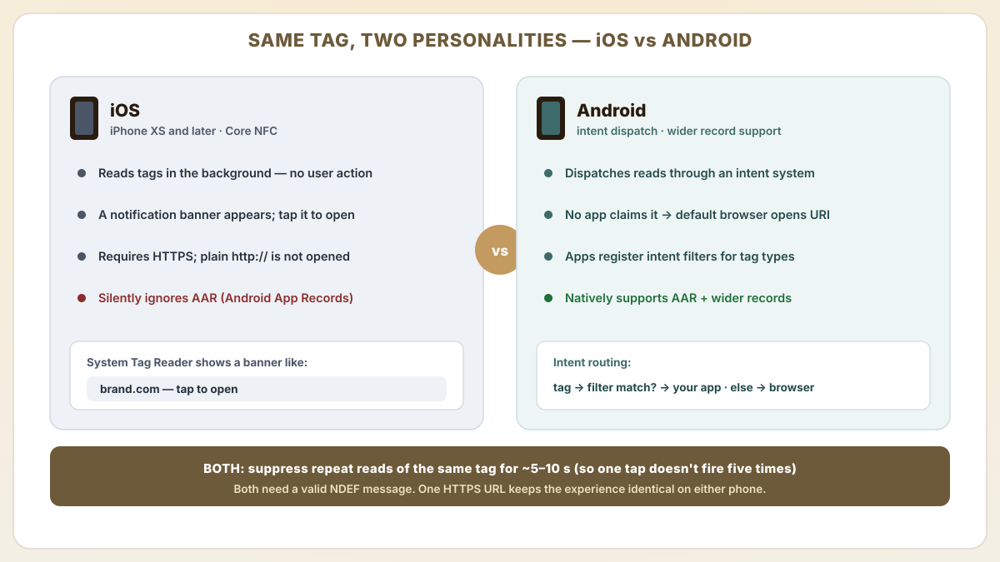
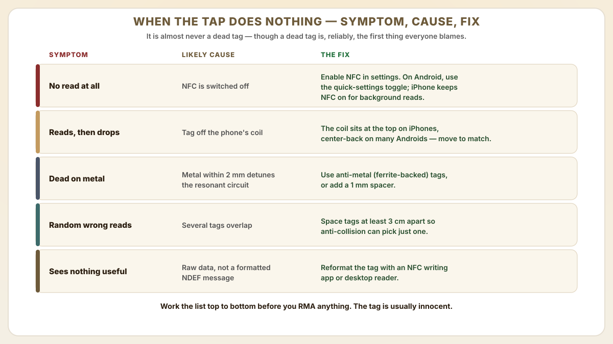

◆ Local preview — enlivened copy + on-brand vector diagrams · not yet shipped
NFC Technology
How NFC Tags Work with Smartphones
By Editorial Board · Reviewed by Peter Zhang · Updated Jul 7, 2026

Quick answer
The honest explainer for product managers and procurement teams on how NFC tags actually talk to smartphones — no hand-waving. It walks the 13.56 MHz RF protocol stack, the NDEF message format, OS-level handling, and the iOS-versus-Android compatibility gaps that decide whether a tap works or quietly does nothing.
NFC tags harvest power from the smartphone's electromagnetic field, requiring no battery and enabling a 10+ year operational lifespan.
The NDEF data format is an open standard that both iOS and Android parse natively, ensuring cross-platform compatibility without app installation.
Understanding the NFC communication sequence helps procurement teams write sharper specifications and sidestep the chip-selection mistakes that only surface after the tags are already in the field.
Hold a phone close to a sticker and a web page opens — no battery in the sticker, no app to install, no pairing dialog to dismiss. To anyone who hasn't seen inside the protocol it looks like a minor magic trick, and the honest engineering explanation is almost stranger than the trick: the tag has no power source of its own. The phone lends it one for the length of the tap. Near Field Communication operates at 13.56 MHz using magnetic induction between two loop antennas. One in the smartphone and one in the NFC tag. The smartphone acts as the active device (reader), generating an alternating magnetic field that induces a current in the tag's antenna coil.

This induced current powers the tag's integrated circuit, which then modulates the RF field to transmit its stored data back to the phone. The process is called load modulation: the tag switches a resistive load on and off across its antenna, creating small amplitude changes in the reader's field that the phone's NFC controller decodes as binary data.
Operating frequency: 13.56 MHz ISM band, globally license-free for NFC applications.
Communication range: 0-10 cm, determined by antenna geometry and reader field strength. Typical smartphone-to-tag range is 1-5 cm.
Data rate: 106 kbit/s for standard NFC Forum tags (NTAG, MIFARE Ultralight). Higher rates (212/424 kbit/s) are used for card emulation mode.
Power transfer: 10-30 mW delivered to the tag from the phone's field. Enough to operate the chip but not enough to power external sensors or LEDs without additional energy harvesting.
Compatibility
All iPhones from XS (2018) and virtually all Android phones since 2015 support background NFC tag reading without requiring any app installation.
How does the NFC protocol stack work from RF to application?
A tap that "just works" is really five separate handshakes stacked on top of each other, each politely waiting for the one beneath it to finish before it takes its turn. You never notice them — until one fails, and a tag that lights up instantly on a colleague's Android plays dead on your iPhone. Here is the whole ladder, and the specific failure that hides on each rung.

Layer
Standard
Function
Failure mode
Physical / RF
ISO 18092 / ISO 14443-3A
Magnetic coupling, power transfer, bit-level modulation
Out-of-range, metal interference, detuned antenna
Anti-collision
ISO 14443-3A
Identifies and selects a single tag when multiple are in the field
NDEF is the tag's grammar: the agreed-upon way to arrange bytes so that a phone the tag has never met can still read the message and know exactly what to do with it. Formally, it is the standard data format stored on NFC tags. It defines how records (URLs, text strings, vCards, application launch commands) are structured so that any NFC-enabled device can parse them consistently. Get the grammar right and every device understands you; get it wrong and the tag technically "has data" — it just reads as gibberish.

An NDEF message consists of one or more NDEF records, each containing a header (record type, payload length, ID) and a payload. The most common record types in B2B applications are URI (web link), Text (plain text with language code), vCard (contact information in MIME format) and Android Application Record (AAR) which forces a specific app to handle the tag.
URI records use a prefix byte to compress common URL schemes (https://, tel:, mailto:), saving 5-10 bytes of tag memory.
Text records include a language code (e.g., 'en', 'de') enabling multi-language content on a single tag using multiple text records.
Smart Poster records combine a URI with a title and icon reference, allowing phones to display a preview before opening the link.
Custom MIME-type records can store application-specific binary data that only your app knows how to parse.
What's the difference between iOS and android NFC behavior?
Here is the demo that has quietly humbled a hundred product launches: the tap works flawlessly on the presenter's Android, then does precisely nothing on the VP's iPhone. Same tag, same URL — two operating systems with very different manners. Design for both from the first spec and you simply never have that meeting.

iOS (iPhone XS and later) reads NFC tags in the background without user action. A notification banner appears when a tag is detected, and tapping the banner opens the URL or action.
Android dispatches NFC tag reads through an intent system. If no app claims the intent, the default browser opens URL records. Apps can register intent filters to handle specific tag types.
iOS requires HTTPS URLs. HTTP links without TLS are not opened from NFC tag reads. Always use HTTPS for cross-platform compatibility.
Android supports a wider range of NDEF record types natively, including application launch via AAR, which is ignored by iOS.
Both platforms suppress repeated reads of the same tag within a short cooldown period (approximately 5-10 seconds) to prevent accidental duplicate actions.
How do you troubleshoot common NFC read failures?
When a smartphone fails to read an NFC tag, the issue is almost always physical positioning, environmental interference or a software configuration problem. Not a defective tag — though a defective tag is, reliably, the first thing everyone suspects.

No read response: Ensure NFC is enabled in phone settings. On Android, check that the NFC toggle in quick settings is on. On iPhone, NFC is always on for background reading.
Intermittent reads: The tag antenna is not aligned with the phone's NFC coil. NFC coil position varies by phone model. On iPhones it is at the top; on many Android devices it is center-back.
Metal surface interference: Metal within 2 mm of the tag antenna detunes the resonant circuit. Use anti-metal (ferrite-backed) tags or add a 1 mm spacer between the tag and the metal surface.
Multiple tags in proximity: If two or more tags overlap in the phone's field, the anti-collision protocol may fail. Space tags at least 3 cm apart.
NDEF not recognized: The tag may contain raw data rather than a formatted NDEF message. Reformat the tag using an NFC writing app or desktop reader.
How do iOS App Clips and Web NFC change the developer story?
Beyond the basic "tap to open URL" flow, two platform features have reshaped what a single NFC tap can do without forcing the user to install an app: Apple's App Clips (iOS 14+) and the W3C Web NFC API (Chrome on Android). Knowing which platform supports which API is the difference between an authentication flow that works for 100% of users vs one that silently fails on iPhone.
iOS App Clips: a 10 MB lightweight slice of a native iOS app that launches from an NFC tap, QR scan or App Clip Code. The tag's NDEF URI carries an https://appclip.apple.com/id?p=<bundle> link or a brand-controlled HTTPS URL with an associated apple-app-site-association file. Apple's App Clip template integrates with Apple Pay and Sign in with Apple — high-conversion for retail loyalty, valet parking, EV charging.
Android Instant Apps and intents: Android equivalents launch via NFC intent filters; the older Instant Apps program is in maintenance mode but most consumer flows now use a regular installed app + deep links, or the Web NFC fallback. Android Application Records (AAR) on the tag force a specific package to handle the intent — but AAR is silently ignored by iOS, which is the most common cross-platform NFC bug.
Web NFC API (W3C): exposes NDEFReader to web pages via JavaScript, letting a PWA read tags after a user permission prompt. Coverage is currently Chrome on Android only — Safari and iOS WebKit do not implement Web NFC as of 2026. Plan for a Web NFC primary path with a Core NFC native iOS app fallback when reaching iPhone users.
Core NFC (iOS): Apple's native API surface for tag reading (iPhone 7+) and writing (iPhone 7+ from iOS 13). Background tag reading works on iPhone XS+ via the System Tag Reader; older devices require a foreground app. Apple's NDEF parser silently fails on http:// URLs — always specify https://.
Tools landscape (2026): NFC Tools (wakdev) remains the de facto Android writer/reader for off-the-shelf tag programming; NFC Tap (App Store) is a popular iOS counterpart that exercises iOS 17 Core NFC features. For volume programming workflows, desktop encoders (ACR122U, Identiv uTrust) plus a host SDK still win on speed and consistency.
How do MagSafe, foldable phones and wireless charging affect NFC tap reliability?
The NFC tap experience used to be a simple antenna-positioning problem; on modern smartphones it has become an interference engineering problem. Procurement teams writing NFC product specs in 2026 should plan for these device-side variables. The tag itself is the one component in this whole exchange that hasn't changed in years; it is everything you hold it against that keeps reinventing itself.
iPhone MagSafe interference: iPhone 12+ have a MagSafe magnet ring near the rear NFC antenna. Magnetic accessories (wallets, mounts) usually don't block NFC reads, but ferrite-bearing accessories can detune the coil and degrade range by 30-50%. Test taps with the customer's actual case before launch.
Foldable phones (Samsung Galaxy Z Fold/Flip, Pixel Fold, OPPO Find N): NFC antenna placement on foldables is non-standard — often top-rear or hinge-side. Marketing collateral that says 'tap the back of your phone' fails for users on foldables. Brand instructions should say 'tap with the back of your phone near the top'.
Wireless charging coils: Qi/Qi2 wireless charging uses similar 100-200 kHz magnetic induction. A tag stuck on top of a charging pad will be intermittently detuned during charging cycles. Place tags ≥3 cm away from charging surfaces.
Phone case metal plates: ring holders, MagSafe-compatible aftermarket cases with hidden steel plates, and 'wallet' folio cases all add metal that can detune NFC. Spec ferrite-backed (anti-metal) tags for B2B environments where the user's case is uncontrolled.
Power-saving and dark-screen reads: iOS allows background tag reads even when the screen is off (locked iPhone XS+). Android typically requires the screen on; Samsung's One UI 'NFC always-on' setting must be enabled for screen-off reads. Document this explicitly in B2B onboarding.
Keep going
NFC tag products
Shop NFC stickers and cards with pre-formatted NDEF memory for smartphone compatibility.
No. Passive NFC tags harvest all their operating power from the smartphone's RF field. This is why they have no expiration date and can function for 10+ years without maintenance. Active NFC devices (like phones) do require a battery, but the tags themselves do not.
Can NFC tags be read through a phone case?
Yes, standard phone cases made of silicone, plastic, leather or TPU do not block NFC signals. Cases with metal plates, built-in magnets (MagSafe-style) or thick rugged armor may reduce read range by 1-2 cm. Remove the case to test if you experience read issues.
What is the maximum data an NFC tag can store?
Standard NFC Forum Type 2 Tags (NTAG series) store 144-888 bytes depending on the chip variant. For larger payloads, NFC Forum Type 4 Tags (like MIFARE DESFire) offer up to 8 KB. In practice, most NFC applications store a URL (50-150 bytes), making even the smallest chips sufficient.
Can a smartphone write data to an NFC tag?
Yes. Android phones can write NDEF records to writable NFC tags using built-in APIs or free apps like NFC TagWriter. iPhones gained NFC writing capability with iOS 13 (2019) via Core NFC APIs, though writing requires a dedicated app. Safari cannot write to tags.
Is NFC communication secure?
NFC's short range (under 10 cm) provides inherent physical security. An attacker must be within centimeters to intercept the signal. For additional security, NTAG chips support password-protected memory access, and advanced chips like NTAG424 DNA provide AES-128 encrypted communication and tamper detection.
Will the same NFC tag launch an iOS App Clip and an Android intent without two separate tags?
Yes if you encode the tag carefully. Use a single NDEF URI record pointing to your brand-controlled HTTPS URL (e.g., https://brand.com/c/<id>). On iOS 14+, an apple-app-site-association file at that domain triggers the matching App Clip experience. On Android, a deep-link intent filter or app-link verification at the same domain launches your installed app or falls back to the browser. Avoid using Android Application Records (AAR) — iOS silently ignores them, and the experience diverges. The 'one URL, two platforms' pattern is the production standard for retail loyalty, parking and luxury authentication taps.
When should we plan a Web NFC PWA vs a native Core NFC iOS app?
Use Web NFC (Chrome on Android only as of 2026) when your audience is overwhelmingly Android, when you want a no-install web experience, and when your read-only payload is short. The W3C NDEFReader API is mature on Chrome but not implemented in Safari/iOS WebKit, so for any consumer flow with significant iPhone share you must pair Web NFC with a Core NFC native iOS app or fall back to the OS-level System Tag Reader (which opens the URL in Safari without a permission prompt). For B2B enterprise apps with controlled device fleets — typically Android industrial handhelds — Web NFC alone is now production-ready.